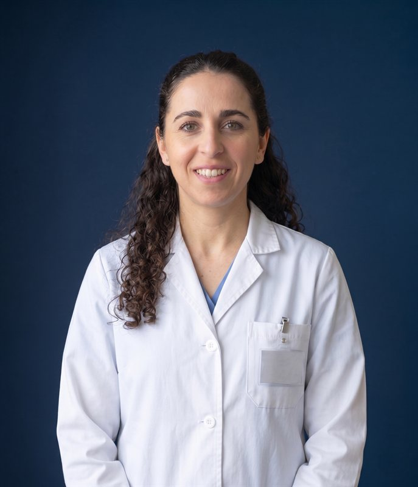
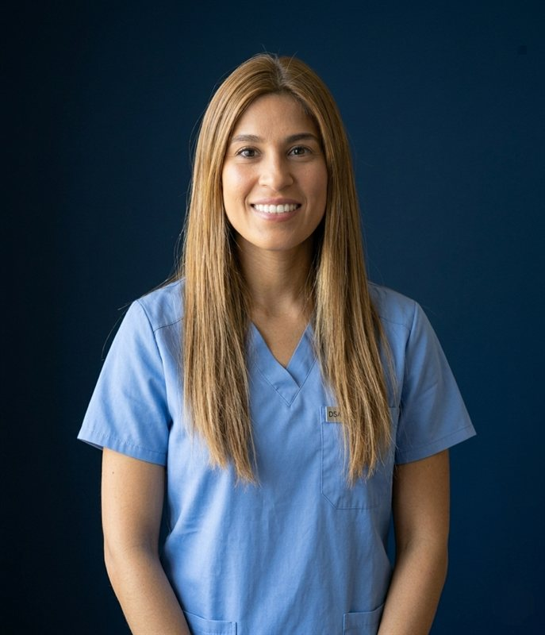
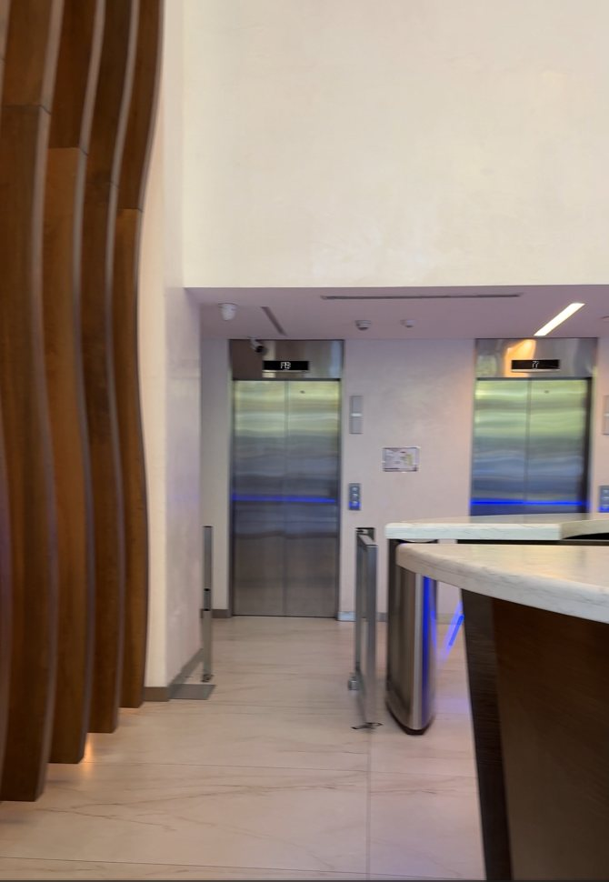
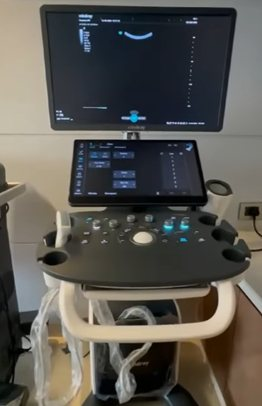

Qué vamos a ver
01 · El centro
Quiénes somos, especialidades y equipo médico.
02 · Capacidad
Prácticas, tecnología e instalaciones.
03 · Gestión
Reservo + ARCA: facturación directa con la obra social.
04 · Difusión
Canales de promoción y captación de pacientes.
05 · Propuesta
Por qué sumar CICAR a la cartilla.
06 · Contacto
Próximos pasos para avanzar.
Cardiología integral en Barrio Norte
Reunimos cardiología y múltiples especialidades en un único centro, con atención continua y comunicación directa entre el paciente y el equipo médico.
Interdisciplinario
Especialistas universitarios.
Mismo día
Diagnóstico inmediato.
Alta tecnología
Equipos de última generación.
Una valoración integral del paciente
10 especialidades que trabajan de forma coordinada sobre la historia clínica del paciente.
Todo el diagnóstico en un solo centro
ECG y monitoreo
Electrocardiograma · Holter 24/48h · Presurometría ambulatoria (MAPA)
Pruebas de esfuerzo
Ergometría · Ecoestrés con ejercicio (en cinta)
Ecodoppler cardíaco
Ecodoppler cardíaco color · Ecoestrés-strain con módulo ECG
Ecografía y vascular
Ecodoppler vascular · Ecografía general y musculoesquelética
Especialistas que cuidan tu corazón
Dr. Nicolás Ciancaglini
Cardiólogo universitario · Ecodoppler cardíaco y transesofágico

Dra. Yanina Croissant
Cardióloga universitaria · Imágenes cardiovasculares

Dra. María Belén Barbosa
Cardióloga universitaria · Ecodoppler cardiovascular
Núcleo de 3 cardiólogos universitarios, sumando especialistas a medida que el centro crece.
Equipos para resolver el estudio completo
Ecógrafo Mindray Consona 8
Transductor cardiológico, lineal y convexo. Resuelve ecodoppler cardíaco color, vascular y ecografía general y musculoesquelética.
Software ecoestrés-strain
Módulo ECG integrado para ecoestrés y análisis de deformación miocárdica (strain).
Electrocardiógrafo
ECG con informe inmediato, integrado a la historia clínica electrónica.
Desfibrilador externo manual
Para reanimación cardiopulmonar avanzada y monitoreo de constantes vitales en el centro.
Cinta ergométrica RANDERS ARG-8600
Cinta profesional para ergometría y ecoestrés con ejercicio, con monitoreo continuo de ECG y presión arterial durante el estudio.
- Estudio realizado en el centro, sin derivación
- Integra con el ecógrafo y el módulo de ecoestrés-strain
Ficha técnica
- Motor 3 HP corriente alterna
- Velocidad hasta 25 km/h
- Inclinación electrónica hasta 20°
- Superficie útil 160 × 60 cm
- Programas monitor con 24
- Capacidad hasta 180 kg
- Amortiguación deck en suspensión
El centro en fotos




Hacé clic en cada ambiente para ver todas sus fotos y navegar con las flechas.
8 consultorios equipados, luminosos y accesibles
Luz natural
Ventanales polarizados de piso a techo en cada box.
Historia clínica digital
Computadora Lenovo en cada consultorio, conectada a Reservo.
Teleconsultas
Cámara en cada computadora para atención a distancia.
Examen clínico
Camilla en todos los consultorios; lavamanos en varios.
Consultorio de imágenes
Espacio dedicado a ecodoppler cardíaco y ecografía.
Sala de ergometría
Ambiente aparte para pruebas de esfuerzo.
Un centro pensado para el paciente y el equipo
Sala de espera y confort
- Recepción atendida por personal
- Capacidad para 20 personas
- Dispenser de agua fría y caliente
- Expendedora de comida y bebida
- Enchufes para cargar dispositivos
- 2 pantallas llamador de pacientes
Conectividad y clima
- WiFi con 2 redes (pacientes y personal)
- Cámaras de teleconsulta en cada PC
- Aire acondicionado frío/calor
- Ventilación por conductos
- Ventanales polarizados con luz natural
Seguridad e higiene
- Cámaras de seguridad
- Luces de emergencia
- Cerraduras inteligentes (3 accesos)
- Servicio de limpieza permanente
- Retiro de residuos patogénicos
Accesibilidad y personal
- Baño accesible y todo el centro transitable para movilidad reducida
- Área Protegida – Ayuda Médica (GAM)
- Sala de reuniones para personal de salud
- Cocina y baño privado del personal
- Área de descanso del personal
Facturación directa con la obra social
Trabajamos con Reservo, integrado con ARCA: facturamos a pacientes y obras sociales desde el mismo sistema.
- Facturación electrónica a obras sociales vía ARCA
- Turnos online y agenda por profesional
- Historia clínica electrónica unificada
- Recetas digitales (Ley 27.553)
Beneficio para la obra social
Facturación y débitos desde Reservo, con trazabilidad completa de prestaciones, recetas y prácticas. Validación ágil y reportería clara para auditoría.
Un circuito simple de punta a punta
Saca turno
Online, web o WhatsApp.
Se atiende
Consulta o estudio el mismo día.
Estudios
Resueltos en el centro.
Resultados
Digitales e inmediatos.
Facturación
A la obra social vía Reservo.
Todo trazable y digital: del turno a la facturación, sin papeles ni circuitos paralelos.
En el centro de Barrio Norte
- Uruguay 783, Piso 3, Of. 301 — San Nicolás, CABA
- Edificio corporativo a estrenar, con seguridad 24 hs
- A metros de Av. Santa Fe y Av. Córdoba
- Cercano a subte líneas B y D
- Múltiples colectivos en la zona
Captación activa de pacientes
Invertimos desde el inicio en marketing digital. Sumar CICAR a la cartilla = afiliados que eligen el centro y usan la cobertura.
Meta Ads
Campañas pagas segmentadas en Facebook e Instagram.
Instagram · @centromedicocicar
Salud, prevención y novedades del centro.
Web · centrocicar.com
Turnos online y info 24/7.
Difusión institucional y de campañas.
Un prestador nuevo y completo, con gestión digital y captación propia de pacientes.
- Cartera amplia en un solo prestador
- Resolución el mismo día
- Facturación integrada con ARCA
- Trazabilidad para auditoría
- Captación activa = más uso de cartilla
- Ubicación estratégica en Barrio Norte
Sumemos CICAR a la cartilla
Un prestador nuevo y completo, con gestión digital y captación propia de pacientes, listo para atender a sus afiliados.